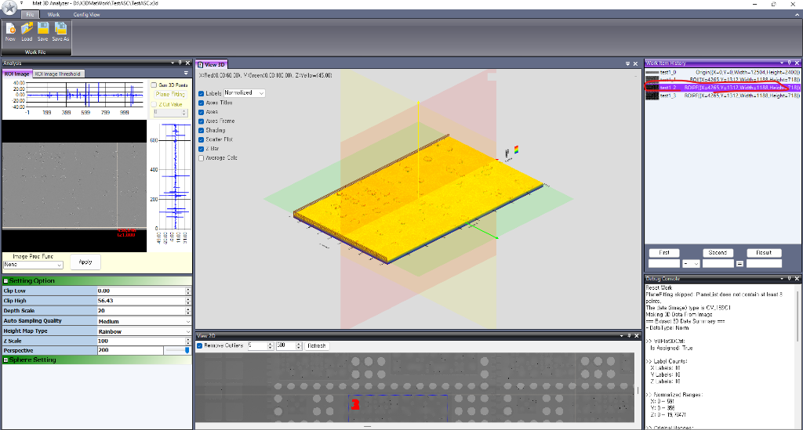
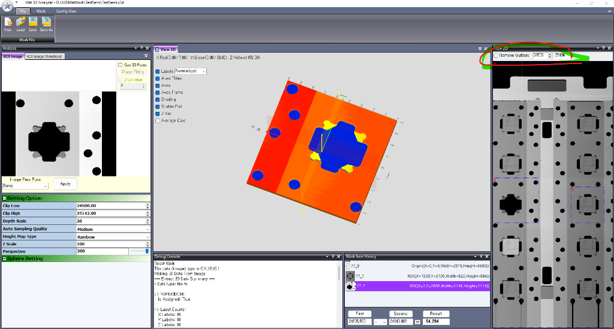

GitHub Pages에 배포되면 Docsify 테마로 자동 렌더링되며, 이 파일은 로컬에서 바로 열람하기 위한 페이지입니다.
2D X-Ray 및 고해상도 단면 영상 기반의 실시간 3D 높이 계측 및 표면 분석 시스템

기존 고가 3D CT 장비나 무거운 상용 소프트웨어를 도입하지 않고도, 2D 계측 영상(16비트 TIFF 등)에서 관심 영역(ROI)을 지정하는 즉시 실시간 3D 표면 메쉬를 생성하여 정밀 단차, 평면 기울기(Tilt), 노이즈를 직관적으로 분석할 수 있는 산업용 분석 도구입니다.
| 기능 | 설명 |
|---|---|
| 실시간 3D 메쉬 렌더링 | OpenTK(OpenGL VBO)를 활용해 60fps로 고속 3D 시각화 |
| 3점 기반 평면 피팅 | 3개 기준점으로 평면 방정식을 산출해 표면 기울기 보정 |
| 이상치 제거 필터 | 지정 임계값 외 스파이크 노이즈를 8방향 이웃 평균값으로 실시간 보간 |
| 실시간 단차 사칙연산 | 다중 ROI 간 평균 높이를 가져와 덧셈, 뺄셈, 곱셈, 나눗셈 즉시 계산 |
"2D 엑스레이 이미지만 봐서는 솔더볼이나 칩이 위로 얼마나 솟았는지 알 수가 없다..."
반도체, 전자 패키징 공정에서 16비트 흑백 X-Ray 이미지는 밝기 정보를 담고 있지만 평면 사진일 뿐입니다. 미세한 단차 차이를 육안으로 파악하기 어렵고, 비싼 3D CT는 전수 검사에 쓰기 어렵습니다.
가볍고 빠른 독립형 C# 분석 툴: 2D 화면에서 ROI를 그리는 순간 0.5초 안에 3D 메쉬 생성, 실시간 단차 연산 및 평면 기울기 보정.
"수십만 개의 3D 포인트를 C# WinForms 위에서 부드럽게 돌리려면 어떻게 해야 할까?"
GPU 메모리에 정점 버퍼(VBO)를 올려두고 60fps 이상으로 실시간 회전/줌 처리. Phong Shading과 높이별 레인보우 컬러맵 적용.
측정 부품이 기울어져 있을 때 3개 점을 클릭하면 외적(Cross Product)으로 평면 방정식을 풀어서 전체 표면의 기울기를 완벽히 보정.
"소프트웨어의 80%는 기능 개발이지만, 나머지 20%의 현장 디테일이 진짜 생명력을 만든다."

스파이크 노이즈를 8방향 이웃 평균값으로 보간. 수치 조절 후 즉시 3D 화면을 재계산하는 Refresh 버튼 추가.
기준점이 3개 미만인 구버전 파일 로드 시 크래시를 방지하기 위해 workItem.PlaneList.Count >= 3 사전 검증 로직 추가.
Delete 키 및 우클릭 메뉴를 통한 안전한 삭제와 2D 오버레이 뷰 즉시 동기화.